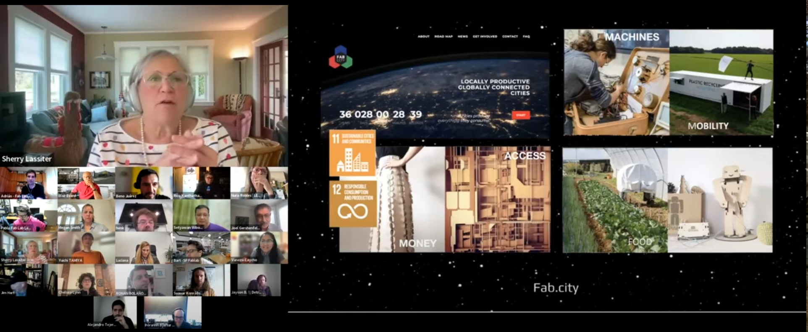

Fab All-In
Smiðjan hefur tekið þátt frá því 2022 í Fab All-in. þar er lög sérstök áhersla á áhrif sem fab lab smiðjur geta haft óháð tækni.
Námskeiðið stendur yfir frá febrúar til maí á hverju ári. Smiðjan hefur aðstoðað við að þróa kennsluna.

upplýsingar á ensku
Designed to increase belonging, expand (inclusive, urgent, enivro-social-econ-cultural-etc) impact, and create community
Does your fab community match the make-up of your whole community, with all neighbors feeling welcome, showing up, leading, financially supported, visible, and …?
- If yes, please join us and come share your work and methods along with others!
- If not, come join us – and hear different ways others have been solving for inclusive Fab communities! You can do this!
- Either way, or not exactly applicable? Come join us
This interactive set of eight sessions builds skills, knowledge, and capability around the social systems needed to co-evolve with digital fabrication technologies.
We call it “Fab All-In” to signal that both “all topics” and “all people” could experience welcome in the journey to positive social, economic, environmental creative impact, personal self-expression, leadership/leader-shop, and community self-sufficiency.”
Course Structure:
- We begin by hearing innovators from the FabLab network sharing some innovations already happening in this way. Themed sessions with a series of short presentations from regional leaders elevate stories of existing exceptional work from teams around the world – especially hearing from labs and initiatives that have scaled inclusive to those people and topics that have been under-represented in the Fab network. Each session will also feature application opportunities and interaction— including a curriculum for exploring and developing plans, dialog with colleagues, sharing more details about challenges with solutions people developed iteratively, and conducting collaborative project development input sessions.
- Two skills deep-dive sessions later in the semester will workshop several skills areas, plus an optional open-office hours session for co-working time.
- The final session will be a Solutionspalooza to share early solutions-in-progress and hear more details about emerging initiatives we discover along the way.
If you are interested in learning more, check out our recitation from the 2023 Fab All-In Recitation from last spring: May 2023 Fab Academy Fab All-In Recitation
We request applying by January 19th, 2024! Limited scholarships are available. (note: if you miss the deadline, please still sign up)
Join us Tuition Fee: 100USD$
Learning Objectives
- Become aware that other colleagues have already solved hard inclusion challenges. Gain comfort in how to approach and solve inclusion faster, together;
- Learn how to collaboratively lead community change initiatives;
- Foster inclusivity by gender, race, economic status, geography, caste, and other forms of identity — as well as foster inclusion by topics or subjects of work;
- Empower a more natural and culturally-aware context for digital fabrication by engaging broader talent inclusion;
- Promote economic vitality and community self-sufficiency;
- Appreciate, explore and consider how to see, address, and counter tech bias;
- Share what you have innovated and learn with others; and
- Join this cool emergent community of practice.
Curriculum Overview
This series of eight community-led sessions are held from 9:00-11:00am US EST. It will include practical support (and your own projects) centered on building inclusive communities around digital fabrication.
Here is a preliminary listing of topics and presenters from the learning community:
Fab All In - Spring 2024
final content will vary as scheduling comes together 8 Sessions Feb 5 - May 13-14, 2024*
- Session 1: All-In -- February 5, 2024
- Session 2: Systemic All-in Impact – February 19, 2024
- Session 3: The Natural/Cultural Context -- -- March 4, 2024
- Session 4: —Skills + Workshop-Office Hours-- March 18, 2024
- Session 5: Economic Vitality -- April 15, 2024
- Session 6: —Skills + Workshop-Office Hours --April 29, 2024
- Session 7: —Final Co-work Session (Optional) – May 6, 2024
- Session 8: Solutionspalooza -- May 13, 2024 and May 14, 2024 (double session)
Session 1 : Systemic All-in Impact
- Welcome
- Stories
- Welcome from Around the World - Sherry Lassiter, Beno Juarez, Pradnya P Shindekar, Rico Kanthatham, Nuria Robles Peru, Spain, India, United States, Japan
- Solution Making Through Inclusion/ Scout & Scale + Tech/Learning Bias - Megan Smith, shift7 United States
- Highlights from Year 1 - Insights from the first Cohort Global
- Fab Academany Overview - Neil Gershenfeld United States
- Project Guidance: Observe patterns of interaction in a fab lab; Begin to consider an achievable change objective (but don’t select until after observations); start to observe and explore relevant indicators.
Introduce tools, sites, and resources
Session 2: Systemic All-in Impact
Check in
Stories: * Gender Inclusion: Nuria Robles, Fab Lab León, Spain * Neighborhood Outreach: Dan Meyer, United States * Rural Sustainability: Pradnya P Shindekar, Pioneer edu tech pvt ltd, India * Intentional Inclusion: Felicity Mecha, Kenya * Connected Social Networks: Adrian Torres Alumni * Intergeneration Inclusion - Remy Ducros Alumni
Project Guidance: Test out a “positive nudge” in the patterns of interaction
Session 3: The Natural/Cultural Context
Check in
Stories: * Amazon Wardens: Beno Juarez, Amazon, Peru * Intergenerational Learning: LeeAnn Garrick, Cook Inlet Tribal Council, Anchorage, United States * Self-Sufficient Community and Culture: Blair Evans, Incite-Focus, Detroit, United States * Circular Economy with Natural Materials: Alysia Garmulewicz and Pilar Bolumburu, Santiago, Chile * Rural Community Revitalization: Setyawan Wibowo Indonesia * Fab Cities: Tomas Diez Barcelona, Spain
Project Guidance: Document early indicator results; Assess underlying forces and factors; Adapt and adjust.
Session 4: Skills Workshop & Office Hours
Check in
Skills Development (Interactive Session)
Office Hours
Session 5: Economic Vitality
Check in
Stories: * Italy COVID response: Martina Ferracane Sicily, Italy * Digital Fabrication in Refugee Camps: Andrew Lamb London, England * creative logistics: Þórarinn Bjartur Breiðfjörð Ísafjörður, Iceland * Worker Ownership/Self-sufficiency: Danny Beesley Austin, United States * Fabricademy, Textile & Technology Academy: Cecilia Raspanti & Anastasia Pistofidou (cofounders) Global and Nuria Robles Fab Lab León, Spain * Considering the UN Sustainable Development Goals in Fab Labs: Pieter van der Hijden Alumni * iFurniture and the Digital Carpentry Ecosystem: Vaneza Caycho Alumni
Project Guidance Workshop: Document continued indicator results; Develop sustainability plan.
Session 6: Workshop & Office Hours
Check in
Skills Development (Interactive Session)
Office Hours
Session 7: Final Co-work Session (Optional)
Co-work Time for Final Projects and Open Office Hours
Session 8: Solutionspalooza
Check in
Presentations and Celebration: Participants share their projects and already-existing-work stories (All presenters and alumni encouraged to come!).
[End of Syllabus]
Fab All-In Faculty:
Fab All-In has been co-created by a team of Fab Lab community colleagues working with Fab Foundation leadership – our Fab All-In Faculty is from all over the world. The 1st Fab All-In Course Program of 6 sessions was held during the Fall of 2022. We also held a recitation sampler (1 hour) in May 2023 as a session in Fab Academy spring 2023.
For the 2nd Fab All-In Course Program - Spring 2024, there will be 8 sessions outlined above – our collaborative faculty continues and we also welcome several alumni of session-1 to join in sharing-teaching-co creating the Fab All-In course.